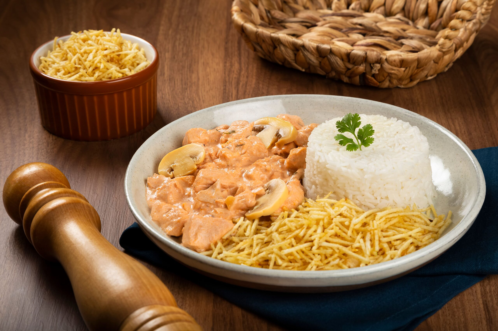

Stroganoff

This is a creamy salad of meat, milk, ketchup, and mustard. Russians made it, Brazilian made it better
OOOH YEAH! probably, this recipe came from a fight against a bear. Some Soviets must have it's meat mixed with tomatoes, mushrooms and vodka and right after that went to get some nazis! Ah but this is the Brazilian way ok? no vodka or bears
Ingredients
- 1Kg of first class bovine meat (like beef rump)
- 200g of champignon
- Black pepper (as much as you want of it)
- 3 tomatoes chopped in cubes and without seeds
- 2 soup spoons of ketchup
- 3 onion heads
- Salt (as much as you want of it)
- 2 soup spoons of olive oil
- Meat seasoning of your taste
30 minutes to eat this heavenly dish!
Directions
- In a pan, add some oil, meat, an onion, all tomatoes, and the seasoning then let it cook for 20 minutes.
- Add some ketchup and the champignon and then let it cook a little bit more until you have a consistent and creamy sauce.
- Turn of the fire and add milk cream.
- Mix the sauce and milk cream.
- Drop all in a bowl and add shoestring potatoes.
Return to top
Return to main page